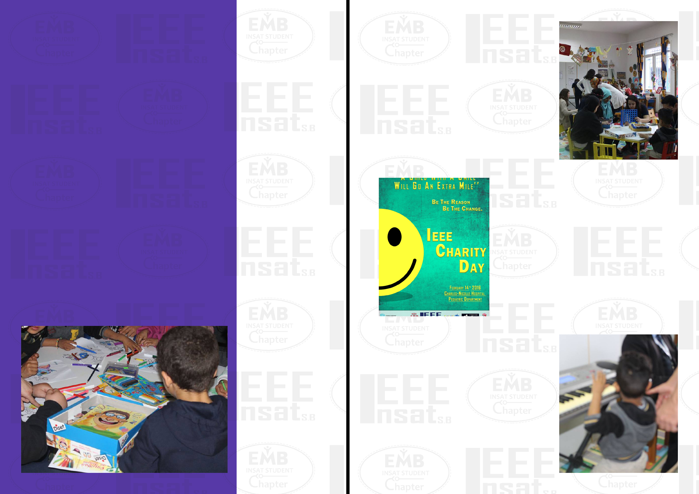
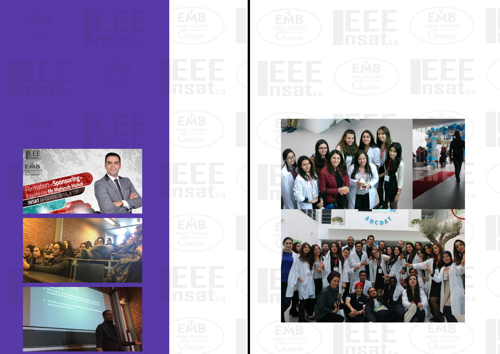
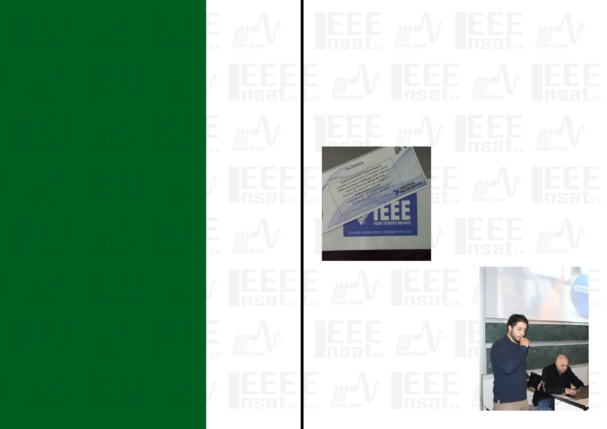

The institute of electrical and electronics engineers
of IEEE for short was founded January the first,
1963 as fruit of the AIEE (the American institute of
electrical and engineers) and the IRE (the institute
of radio engineers) merging into an organization
that is dedicated to the continuing progress of
electronics and technology which aims to provide
a better future for all mankind. As the world moves
to a new range of electronics, giving away your
IEEE
standard computers to portable ones, evolving into satellites and fiber optics, IEEE was
one of the first to adapt to a new generation of technological innovations that included
robotics, nanotechnologies, ultrasonics and much more. with more than 350.000
members in 160 countries by 2010 , the IEEE is globally recognized for its wide range
contributions to the world of technical professionals and its honest visions towards
the empowerment of humanity through technologies, which are visibly found in the
IEEE CORE Values : being TRUSTED as a reliable source of information, ENCOURAGING
studies and research as a priority to the organization , CREATING a community of
confident, wise and trustworthy professionals , able to lead the world-wide researches
forward and making a noticeable difference in their areas of expertise, PROVIDING the
learners with the best conditions and a suitable atmosphere to boost productivity and
self-empowerment, OFFERING to the world highly gifted distinguished people with
adaptability and the ability to be active in all fields of life, and who are exemplary in
work ethnics and integrity. IEEE is not only an organization which provides excellence
and high quality studies, it is also a sample of an integrative society with active
members and a productive staff. It is the sponsor of more than 1.600 conferences in
nearly 80 countries including offices in the U.S, China, Japan India and more. With more
IEEE President and CEO
Barry L. Shoop
IEEE
IEEE INSAT SB
IEEE INSAT SB
Student Chapters
“INSAT En Lumière”
T.S.Y.P.
How to use your
IEEE Account
Effectively?
Fun Zone
IEEE INSAT SB
Members data base
than 4 million documents in digital libraries, it
takes the lead as a visionary, pioneering, educative
organization making its future goals to expand
its communities to integrate more individuals
into fruitful , flexible debates and collaborations,
empowering more professionals , bringing forth
technology and using it to help solve our modern-
world dilemmas and conflicts , providing better
future for the next generations to come , ensuring
dynamic , productive activities and conferences
focused on technology and development , adapting
to the demands of the surrounding based on the
needs of the public and individuals. IEEE is more
than an organization; it is ambition, hard work,
empowerment, humanitarian efforts honesty and
integrity. It is now and the future.
1 2
IEEE INSAT SB
The IEEE INSAT Student Branch is a recent
Branch of the Tunisia section.
It was created in November 2012 by 12
Student members and a senior member
Mrs Afef Banani attached to the Industrial
Computing and Automation field.
Now it has more than 287 members in
different chapters ; PES (power and energy
society ) EMBS (Engineering in Medicine
and Biology Society ) CS (computer society
) IAS(industrial applications society) RAS
(robotics and automation society)
As a student branch, IEEE INSAT SB depends
mainly on volunteers to organize the events
and activities held by the branch. Volunteers
can come from any department whether
within National institute of applied science
and technology or from other institutes.
Becoming an IEEE volunteer can be a
gratifying and memorable experience.
Whether your skills are suited for organizing
conferences and meetings, financial
reporting, communicating or maintaining
web sites, chances are your local Section
or Society is in need of someone with your
expertise.
IEEE INSAT SB First stand in INSAT’s
Hall
IEEE INSAT SB Student
Chapters
As an IEEE volunteer,
you can take pride in
participating in activities
that interest you, while
expanding your knowledge
of the IEEE, gaining
valuable management
and leadership skills, and
connecting with others in
your profession.
3 4
IEEE INSAT SB
Computer Society
Student Chapter
Hash Code
Hash Code is a relatively
new competition organized
in Europe, the middle east
and Africa by Google. And
in this year’s edition IEEE
student branch Computer
Society took their shot to a
relative degree of success. So why Hash Code and why this Year? Most of the participants
answered that after receiving an invitation from the CS of INSAT and some online reading
about the competition they simply couldn’t resist. Hash Code would certainly represent
an interesting challenge that would allow them to collaborate and test their abilities,
and perhaps even win something in the process, especially for whom this is the first
coding competition.
Software development, especially for students is mostly a solitary task, and with
limited time (the first phase of the competition only lasts 6 hours) working in groups
might become disadvantaging .How did the competitors handle this. Through both their
responses and their actions, it was undeniable that any previous task division or plan
would have been futile. Instead, the participants opted for a division of tasks on the fly
and based on the problem that they were given, after an initial phase of reading and
analysis. What was the outcome? Well, even though none of the candidates made it to
the Paris qualifications, that’s not how they choose to measure their success. As anyone
who was present could’ve deduced, participating in Hash Code was a fun experience for
the cheer thrill of it. Racing against time and trying to compete with and against your
friends is both a fun and educational process as it both teaches about the strengths and
weaknesses of your team and yours, and how to effectively manage them.
IEEE Computer Society sits on the number of
membership’s throne with more than 60.000
members.
It is the reliable fountain of networking, information
and career-development of a world-wide
community of technology leaders that encompasses
researchers, educators, software engineers, IT
professionals, employers, and students.
This association was established in 1971 with
a main objective and goal to advance computer
science’s theory, practice and applications.
IEEE CS subsidize more than 200 technical
conferences and events each year, including the
industry-oriented “Rock Stars” series, all over the
world, aimed at research and industry professionals,
needless to mention their evolutionary publications
(17 scholarly journals and 13 magazines among
others) featuring the latest technology trends.
In addition to what have been included, it also
provides useful products such as “myComputer”
app, and professional education and training and has
forged development and provider partnerships with
major institutions and corporations internationally.
The IEEE INSAT CS chapter was founded Mars
2015 by no other than our SB president “Skander
Mansouri” with Mrs.Sfaxi Lilia as an advisor.
The executive board is composed of:
• CyrineGassouma:president
• FadiAbassi:TechnicalVicePresident
• NesrineAgrebi:OperationalVicePresident
• IchrakMars:Secratry
• MohammedMhiri:Tresurer
• MarouaLouati:Sponsorshipresponsible
• MeriemRebai:Humanresourcesresponsible
Computer Society
chapter set up a handful
of events:
•Android training
session, January 27th
•Grand Tech, February
17th
•Hashcode, February
11th
•Droidcon, Mars 5th and
6th
•Meet Up “big data”
•Connected objects:
conference
•IEEE madC
5 6
IEEEGrandTech
2016
Mr. Lotfi SaibiMr. Amine Chouaieb Ms. Emna Ghariani
IEEEGrandTech(GT)isanewIEEEinitiativeinRegion
8, consisting of a series of technical events focused
on computing, information technologies and projects
relating to these fields and prepared by IEEE members.
This relatively new initiative started back in 2014 by the
IEEE Hashemite University Computer Society Chapter
from Jordan.
The main objective of this event is to raise awareness
about computing technologies in general, spur the
creativity and passion of IEEE members and give them
a chance to show their potential and to encourage them
to start Computer Society chapters in their universities.
Lebanon, Jordan, Palestine and Tunisia have all hosted
IEEE GT events since January 2016. On February 17th
2016, this event was organized by the local IEEE
Computer Society Chapter at the National Institute of
Applied Science and Technology (INSAT), in Tunisia.
(Teaser Link) Egypt will be next to host it on March 8th.
INSAT Computer Society Student Chapter launched this
event with a presentation about and a live demo of some
the amazing projects that have been prepared by IEEE
members:
• “Etchaka”: is a location based review app ,that’s
a lot like Foursquare but with a Tunisian twist. This
app is dedicated for reviews on the public sector, it
allows you to login with Facebook, then choose a place
from the categories
(Municipality,
Hospital etc.) then
shows you a list
of nearby places
arranged by their
distance to the user.
Once the user picks
a place y, they get
to see its’ rating
and write their own
review or upload a
file that proves a
problem, such as
bad treatment, in
that specific place.
• “Jawna” App:
This App helps give
tourists who come
to Tunisia access to
relevant content (real
time information
about shows,
transportation etc...)
and a selection
of events and
relevant places that
visitors can enjoy
on their visit. As
an interactive tour guide, it provides information about the region the user
currently in and all the things that region has to offer.
• “Need Help”: An application which helps people in many difficult
situations such as accident, health emergency ... etc. With a click on the button
“ask for help”, this app detects automatically user’s current location and phone
number then notifies all app users to come to the rescue.
• “MyInsat” : an application that help students of our university to get
specialized content offered by their peers and the university’s clubs. Once the
users log in and select their class, the App loads their planning to their phone’s
calendar. The app also loads a picture daily from the INSAT’s Photography club
Facebook page (INSATshots) , shows you the day’s playlist uploaded by INSAT’s
drama club( Ciné Radio) , and a selected university press article(INSAT Press)
• “AbC” App: this app aims to facilitate the process of calling in the classroom
for the teacher and to inform parents immediately if their children are absent.
The app shows the teacher a list of students of their current class, and once the
teacher marks the student absent, the app sends a direct notification to their
parent.
Afterwards, three extremely interesting conferences were held:
• Internet of Things Conference: A conference by Mr. Amine Chouaieb,
CEO of CHIFCO. More details
• Leadership and Soft Skills Conference: A conference by Mr. Lotfi Saibi,
President and Director at 21st Century Services & 4D-Leadership House. More
details
• Entrepreneurship and Innovation Conference: A conference by Ms. Emna
Ghariani, the chapter lead director of the Founder Institute in Tunisia, the largest
startup launch program in the world.
7 8
IEEE INSAT SB
Engineering in
Medicine and Biology
Society Student
Chapter
IEEE-EMBS, one of the multiple IEEE branches, is
currently composed of approximately 8000 members
out of the total of 32.000 IEEE member.
As the world’s largest bioengineering society , the
Engineering in Medicine and Biology Society has
, since its founding in the early 1950s , aimed to
providing global leadership to benefit its members
and the entire humanity by both emphasizing on
and contributing to the advance the applications
of engineering sciences and technology to both
medicine and biology , and promoting the professions
related to this domain , through the dissemination
of knowledge , the establishment of standards , the
fostering of professional development and finally and
most importantly the recognition of excellence .
As members of one of the most active IEEE committee,
EMBS family individuals gain membership advantages
within both the EMB society and the far larger IEEE
organization, such as a subscription to the IEEE EMBS
Magazine issuing 6 times per year, large reductions
regarding subscription fees for other EMBS technical
publications, and reduced registration rates for the
Annual International Engineering in Medicine and
Biology Society Conference.
EMB INSAT STUDENT CHAPTER is the 3rd chapter of
EMBS in Tunisia Section and has about 90 members
from the previous Bio-Chemistry Team of IEEE INSAT
SB with various academic backgrounds.
The chapter is currently chaired by Sarra Ben Rabii
The executive board is composed of:
• Sarra Ben Rabii: Chair
• Imen Channoufi: Vice Chair
• Kalthoum Barouni: General Secretary
• Mohamed Abidi: Treasurer
• Nour Sallami: Technical manager
EMB INSAT STUDENT
CHAPTER installed
and stacked a heap of
events:
•Charity day, February
14th
•SO/CEI 17025 certified
training session,
February 24th-27th-
28th
•Sponsorship training
session, Mars 2nd
•ABC day, April 27th
•An Industrial visit, date
not yet determined.
ISO/CEI 17025 Certified
Training Session
Each socially-active individual requires as
many qualifications as he could ever obtain
to snatch himself whatever spot he desires
when it comes to the “career world”.
In the industrial arena, ISO/CEI certification
are a major asset to increasing one’s
recruitment probability.
That’s the main reason to push our EMBS
members to launch an ISO/CEI certified
training session ensured by AQI (African
Quality Institute, founded 2005 by Arab
and European engineers, aiming to provide
research and pragmatic solutions to enable
organizations from any industry to lead the
tools and techniques for managing quality
and performance excellence).
ISO/IEC 17025 General requirements for the
competence of testing and calibration laboratories
is the main ISO standard used by testing and
calibration laboratories. In most major countries,
ISO/IEC 17025 is the standard for which most labs
must hold accreditation in order to be deemed
technically competent. In many cases, suppliers
and regulatory authorities will not accept test
or calibration results from a lab that is not
accredited. Originally known as ISO/IEC Guide
25, ISO/IEC 17025 was initially issued by the
International Organization for Standardization in
1999. There are many commonalities with the ISO
9000 standard, but ISO/IEC 17025 is more specific
in requirements for competence. And it applies
directly to those organizations that produce
testing and calibration results. Since its initial
release, a second release was made in 2005 after
it was agreed that it needed to have its quality
system words more closely aligned with the 2000
version of ISO 9001.
The certified training session took 3 days, 24th,
27th and 28th of February.
9 10

IEEE Charity Day
Charity day, special day dedicated to the unfortunate
children at Charles Nicolle’s hospital.
Organized by IEEE INSAT SB EMBS in collaboration with
YTCA (Young Tunisian Coders Academy) and THEATRO
INSAT .
Sickness is only part of life, as life is as much about
sadness and suffering as much as it is about happiness.
But the picture of a sick child is always hard to stomach
for this innocent youngling can be missing on a lot of life
joys. Taking this thought in consideration, the IEEE INSAT
student branch decided to organize a special day in order
to make those children, suffering from chronic diseases
feel more alive than ever.
And that’s how Charity day was made. The event took place
on February 14th which in fact coincides with Valentine’s
Day, the international day of sharing and making people
feel important and special.
The event went from 9 am till 7 pm with two teams
tagging: one in the morning, one in the afternoon. And
offering a variety of workshops such as; the DIY (do-it-
yourself) workshop, managed by Hiba Othman. Plenty of
handmade crafts were created such as Snow white and
Superman’s cardboards. There was also a photography
workshop, managed by Zeineb Bouzid, the reading
workshop, managed by Syrine Laayouni where the children
were assembled together around a circle reading
tales, we chose and recited the funniest stories to
enhance their imagination.
A little courtesy was bestowed to the children:
portraits. Indeed we were lucky enough to delight
in the work of Mr.Souhail Fakhfekh, an artist who
has proved that the art of drawing overtakes the
concept of penciling and crayoning simple lines on
some paper, these portraits of such delicacy stealing
the children and their mothers’ breaths away. Each
child, actually those whom we were able to pin
down, received a portrait, some sort of a memory
of our visit, and it was a little bit difficult because
of the numerous activities going on that they were
indulging in.
Let’s not forget to set the lights on the unique and
innovative action was organized by Slim Bouakez
and Maha Gnichi, members of the YTCA and an
INSAT student, based on offering these children
a Skratch training session, an informative, simple
and playful language.
It aims to allow them to create their own games. The
purpose of this activity wasn’t only to show them
how to manipulate new technology, but also how to
reflect on creating their first handmade crafts.
So we were rewarded with seeing their beautiful
smiles taking shape on their faces as they were able
to hear the meowing of the cat which was produced
by the small program that they developed.
At the end of the first part of the day, the children
enjoyed the heart shaped cakes and the biscuits
baked by the kitchen crew. A small touch of love to
excite their papilla while paying attention to their
health.
Our work was far from over because we had the
whole afternoon and eve for yet more fun and
entertaining activities to cheer up the youngsters
and lift their spirits up to show them how much
we care for them since valentine’s day isn’t only to
show love for your significant other but for all those
you care about also.
So, we had to switch teams: those who have finished
their job have passed the torch to the second team;
I’m sure they would’ve loved to stay for longer, but
it was under hospital staff’s orders that it wasn’t
allowed.
The DIY mission continued during this session as
well. Right after it was the performance of theatro
11 12
INSAT’s club, whom members welcomed the idea of
cooperation with open arms and big charitable hearts
sacrificing some of their time which would’ve been used
to rehearse their main play scheduled to be performed
within weeks from now.
The play was called “searching for a villain” in the
“Land of super heroes” featuring Aladin, Jaafar, The
genie, The little red riding hood and the big bad wolf,
snow white and the wicked witch, and of course the
main character called “Ali mama”. The show was quite
entertaining and kids laughed so hard.
Then came karaoke’s turn: the youngsters had a
different taste than anticipated by our members where
they demanded to sing popular songs such as “mazatil”,
“houmani” and “houa wala le” instead of cartoon songs.
I guess we shouldn’t have been surprised.
And last but not least, our journey comes to an end with
the projection of the animated movie “ice age 3”, which
was a well-made smart choice since it was completely
safe to watch it, if you know what I mean.
At the end of the evening, a huge pile of presents
collected by our members was offered to them, I guess
you gifts are fundamentals on Valentine’s Day.
To sum it all up quickly, it was exhausting, time-
consuming, thus it was time VERY well-invested. The
smiles drawn on the children’s faces were by far the
rewards we deserve.
We showed them that they are not alone. Their smiles
and giggles taught us that there is always something
good about life, that giving is the best way to know the
true meaning of love.
13 14

Sponsoring Training
Session
Sponsorship is a crucial asset to ensure a project’s, a
start up’s, or even an event’s glorious success.
As students at the verge of starting our own careers,
and as clubs’, associations’ and organizations’
members, it was nothing but important to be provided
with the necessary coaching to best exercise this
monetary management.
So, our IEEE INSAT’s EMBS chapter members granted
us the privilege of a sponsorship training session with
the famous, very successful Mr.Mehdi Mahjoub, a
sales, finance and a variety of economic sectors’ expert,
specialized in Banking,
Project Management &
Innovation Management.
The training session took
place on the 2nd of March
behind INSAT’s doors.
Everyone was welcome
to assist and the presence
of the interested parties
was significant.
The main points of focus
were designated and
detailed such as “how
to address potential-
sponsor target”, “How
to get hold of an
appointment”, “What
should be included in
your sponsorship file and
how to present it”, etc.
In an attempt to interact
with the crowd, the
coach suggested a sort of
exercise which consisted
of listing the potential-
sponsor enterprises
suited to promote MESBS
2017.
In short, this was a great
opportunity for our ABC
DAY sponsorship team
to be fully informed and
equipped to fulfil their
upcoming task, and as for
the remaining part of the
attendants, it was simply
very informative and
helpful.
ABC Day Second Edition
IEEE EMBS INSAT Student Chapters is organizing the second edition of
the ABC Day in collaboration with IEEE ULT SB.
The journey will take place in INSAT’s Hall on April 27
th
2016.
15 16

IEEE INSAT SB Industrial
Applications Society
Student Chapter
Try LabVIEW, exceed your own
expectations …
Most student engineers are led in their lives by the desire to achieve and make a
change, and have therefore set plans and projects and let them grow to finally become
part of them. They may even day-dream about the rewards they’re getting for their
inventions, but when they get down to reality everything just gets upside down! Coding
those endless programs just becomes their worst nightmare ... Aware of the challenges
students will face in the future, the IEEE IAS Chapter INSAT Student Branch set up a
series of events that would make the student’s work a lot easier. In fact, the IAS team
organized two events to introduce LabVIEW to those students.
Wondering what’s LabVIEW?
Standing for Laboratory Virtual Instrument
Engineering Workbench, LabVIEW is central
to NI’s unique platform-based approach to
engineering and science applications that have
already ensured the progress of various industries
all around the globe.
The National Instruments Corporation or NI is a
renowned American company that manufactures
automated test equipment and virtual
instrumentation software in order to guarantee
flexible technology solutions.
Commonly used nowadays, LabVIEW accelerates
the productivity of engineers and scientists. Its
graphical programming syntax enables you to
visualize your engineering system and ensures
the conversion of what you’ve drawn into text,
overcoming complexity problems. In other words,
you just have to draw your circuit the same way
you draw it on a whiteboard.
« I’ve done a lot of projects so far, and I’ve always
searched for a software that would enable me to
program without having to write a code, so for
me LabVIEW is a huge discovery and I will use it
from now on. » - Wassim Welhazi, IMI 4, MyRIO
Card workshop participant
Its specificity is that it accommodates with all
measurement hardware, existing software, and
IP while taking advantage of the newest and most
advanced technology. Moreover, it offers access
to comprehensive analysis and signal processing
libraries.
Being a hard-working student, having always the heighest
grades and then getting your diploma with an excellent
average grade makes of you a great person but not
necessarily a great engineer … You may possess knowledge,
but you are way behind when it comes to dealing with real
industry equipments. Besides, facing all the competition in
the industrial field with a confused mind and an unclear goal
is a really hard task.
Hopefully, your fears will vanish after knowing about the
IEEE Industry Applications Society, one of the largest special
interest societies within the Institute of Electrical and
Electronics Engineers.
As a transnational organization, IAS aims to improve
« the theory and practice of electrical and electronic
engineering in the development, design, manufacture and
application of electrical systems, apparatus, devices, and
controls to the processes and equipment of industry and
commerce; the promotion of safe, reliable, and economic
installations; industry leadership in energy conservation and
environmental, health, and safety issues; and the creation
of voluntary engineering standards and recommended
practices. »
By keeping members abreast of current developments in the
area of technology in electricity and electronics, IAS ensures
their empowerment, both personally and professionally.
In fact, all IAS members have the opportunity to attend
informative meetings, seminars and conferences related
to industrial progress. They have also access to valuable
professional publications such as journals, conferences,
and standards in electrical, electronics, and all related
technologies. Moreover, IAS sponsors a range of books and
periodicals within its technical specialty, ensuring a stronger
professional knowledge connection. Furthermore, it is one
of the principal contributors to IEEE Standards, and Working
Groups are active throughout the Society.
In addition, committees within IAS play a central role in
establishing over 25% of all IEEE industry standard, providing
its nearly 10,000 worldwide members with a chance to
advance their industry.
Through these activities, every member can make a real
difference and contribute to a more productive and safer
industrial environment.
IEEE IAS Chapter INSAT Student Branch
The chapter was created
on October 2014.
The reason behind its
foundation is that a group
of students believed how
important it is for them,
as well as their peers,
to put their theoretical
knowledge into practice
at an early stage of their
education in order to
develop skills enabling
them to become potential
leaders and to have a
prosperous career path.
The actual chairman is Slim
Bouakez and the advisor is
Mrs Afef Benani.
Counting 113 active
members, this chapter has
been, since its creation,
one of the most active
chapters of the IEEE INSAT
SB.
The most memorable
achievement of last year’s
IAS team is that Zoubeir
Zarrouk, former IEEE IAS
Chapter INSAT BS, received
last October 2015 the 2nd
prize of the IAS Myron
Zucker Undergraduate
Student Design Contest; for
his project entitled “Design
and implementation a
simulation tool for the
Reconfigurable Smart
Grid” during the IAS Annual
Meeting in Dallas, Texas.
By aquiring a clear vision
of the industry worldwide,
a student can go beyond its
studies’ restrictions and
make a valuable impact in
the industry.
17 18
Lessening test times and delivering rapid and effective
solutions based on collected data, LabVIEW has been the
key to expand and test the Internet of Things (the network
of physical objects connected to computer-based systems).
To keep track of the evolution of this new technology, the
IAS team organised a conference by Mr. Mehdi Bouzid (an
Electrical Engineer graduated from the ENIT (National
Engineering School of Tunis) in 2007, and who is currently
working for National Instruments as Field Sales Engineer
for the whole Maghreb area).
The event was entitled « Meet your future challenges with
LabVIEW »and was held on January 27th, 2016 behind
INSAT’s doors.
Meet your future challenges with LabVIEW
As an introduction, the participants were called to speak
about their inspiration, as it is the engine that pushes
engineers to reach their goals. Afterwards, they discovered
the NI’s vision of education. After setting a comfortable
atmosphere, our lecturer explained the functioning of
LabVIEW with a real- life simulation that made it a lot
easier for its audience to assimilate the theoretical part of
the presentation.
Before ending the information session, Mr. Mehdi spoke
about the regional NI Graphical System Design Musabaka
2016 that offers engineering students the opportunity to
win big prizes for presenting a project using NI LabVIEW
graphical development environment. Even though the
subscriptions’ deadline has passed for this year, this
competition takes place every year, so future participations
are possible.
After making this first step towards LabVIEW promotion
among student, IAS team envisaged a workshop to
familiarize these future engineers with this software using
NI myRIO Card.
The event was entitled «From Student to Engineer: Preparing Future Innovators with
the NI LabVIEW myRIO » and took place on March 2nd, 2016 also at INSAT.
What’s MyRIO Card?
As students’ need to work with the devices they will use in their future careers as
professional engineers are exponentially growing, the NI launched in August 2013 myRIO
card, a new portable embedded device that enables students as well as educators to
design real and complex engineering systems. NI myRIO delivers the powerful hardware
and software technology needed for students to complete meaningful projects while
gradually learning advanced concepts in embedded and FPGA programming (A field-
programmable gate array (FPGA) is an integrated circuit that can be programmed in the
field after manufacture).
From Student to Engineer: Preparing Future Innovators with the NI LabVIEW myRIO
« It’s been a long time since I’ve been interested in learning how to use LabVIEW but I
don’t like tutorials, I find them boring, so this workshop was my opportunity » - Wassim
Welhazi, IMI 4, MyRIO Card workshop participant
During the workshop, also hosted by Mr. Mehdi Bouzid, the participants had the
opportunity to discover the card’s architecture, features and components, learn about
its advantages and manipulate it. They were also invited to resolve an exercise in groups.
Team work helped lighten the mood. And finally, a video presentation of some projects
done using myRIO card was showed to the participants, representing a living proof of
how powerful this device can be, taking the Industrial applications’ projects to another
level.
« The organization was perfect … all the details were taken into consideration. Besides,
we weren’t many to attend this workshop so the atmosphere was quiet and the
communication with our host was really fluent … we could hear him really well and ask
him questions. » - Jerbi Amani, IMI 4, MyRIO Card workshop participant
« The first step in learning something is always the hardest. This workshop just helped
us do it and gave us the motivation to keep on discovering the advantages this product
has to offer. » - Hichem Bellali, IIA4, MyRIO Card workshop participant
While many engineers around the world ignore the existence of this NI’s product, the
participants in this workshop are already planning to implement their future projects
using the LabVIEW technology. « I’ll use LabVIEW in my PPP Project, said Wassim,
besides, I’m participating in the Musabaka 2016, I’ll use MyRIO Card to concretize my
project. »
IAS INSAT SB Student
Chapter executive board:
Chair: Slim Bouakez
Vice chair and Treasurer:
Islem Cherif
General Secretary
and external relations
manager: Zeineb Bouzid
Media: Mariem Loukil
HRM: Oumaima Ben
Amor
19 20
Lean Manufacturing …
A new method to lean
on
Have you ever heard about the several wastes industries
are suffering from? Starting from energy to time
loss during the industrial process, many companies
nowadays are spending more money on futile actions.
The avoidance of waste was the goal of many researchers.
Learning from anterior experiences, Lean Manufacturing
has become a widely used method that meets both
industrial owners’ and costumer’s needs.
That’s why, IEEE IAS Chapter INSAT Student Branch
introduced this method to engineering students by
organizing a tow-day certified training (International
certificate) on Lean Manufacturing in collaboration
with Planet Formation International PFI Consulting ( a
professional training and consulting firm, and the third
largest industrial hub in Tunisia). This training took place
on February 27th and 28th, 2016.
But what’s Lean Manufacturing?
Lean manufacturing or « lean » is a systematic
method for the elimination of waste (“Muda”) within
a manufacturing system (« Muda » is the Japanese for
futility).
In fact, Lean principles are derived from the Japanese
manufacturing industry, more precisely from Toyota
Production System (TPS). After becoming the world’s
largest automaker, all eyes were focused on this
company, trying to understand the secret that made her
thrive, that’s why the Lean Manufacturing gained a large
recognition.
To adopt the lean method, you should first establish
distinctions between value-adding activity, waste and
non-value-adding work which is waste that must be
done under the present work conditions. Then, know
the original seven muda that reduce an organization’s
profits, competitive edge and customer satisfaction.
These wastes are transport, inventory, motion, waiting,
overproduction, over processing and defects.
Adopting the lean manufacturing directly ensures the
reduction of operating costs, cycle time and non value-
added activities.
Although they had a lot of new information to
assimilate, the trainees never lost their dynamism
as they found it easy to network on many occasions,
building valuable relationships. In fact, presenting
themselves at the beginning of the training helped
them overcome all barriers to communication.
« When I went back home on the first day, even
though it was late and I had course all day long , I
was already waiting for the following day to discover
more about lean. In the middle of the training, I kept
on remembering all my traineeships, and realized
how much time I could have saved if I have attended
this training a couple of years earlier.» -Insaf
Sammouda, IMI 4, Lean Manufacturing training
participant
What makes this training even more interesting
is that the participants will have access to “Leoni
Productivity System” (The department of Lean
Manufacturing) at Leoni Wiring Systems, Sousse
during an industrial visit also planned by IEEE IAS
Chapter INSAT SB for this month
Upcoming Events: March 2016, IEEE IAS Chapter INSAT SB will organise a training
about « Soft Skills » to know all about your personality traits, communication skills ,
leadership , managing people .. ect..
March 2016, IAS will organise industrial visits in order to have practical manufacturing
knowledge
April 2016, IEEE IAS Chapter INSAT SB will organise , with the collaboration of «
Tunisian Red crescent » a medical training about « emergency first response » wich
teach you how to follow steps for emergency care to provide every possible chance of
survival while waiting for emergency medical services to arrive.
April 2016, IEEE IAS Chapter INSAT SB will provide you with a training about « Lean six
sigma green belt » to learn about six sigma tools and the standard principles of Lean .
Mai 2016, IAS will organise visit to automative industry in Tunisia .
This way, you not only
guarantee just-in-
time production, but
you also make better
use of employees’
time by focalizing their
brainpower in value-
adding activities.
During the training,
the participants, in the
number of 19, received
a comprehensive
theoretical presentation
of lean illustrated
by examples and
simulations in order
to enhance their
understanding of this
method. For example,
one of the tasks
they were invited to
accomplish was to
create a game following
a classical procedure
and then recreate the
same game using lean,
which made them aware
of the time and money
this method enabled
them to save.
« The pace of work was
adapted to our mood, we
had breaks when we felt
tired which enabled us to
take advantage of every
moment of the training
». -Insaf Sammouda, IMI
4, Lean Manufacturing
training participant
21 22
IEEE Power and Energy
society INSAT SB
Student Chapter
The IEEE Power & Energy Society (PES), formerly the IEEE
Power Engineering Society, is the oldest society of the
Institute of Electrical and Electronics Engineers (IEEE)
focused on the scientific and engineering knowledge about
electric power and energy .
The Power & Energy Society (PES) provides the forum that
helps us sharing the latest in technological developments
in the electric power industry .
The developing standards guide the construction of
equipment and systems, and it educate the members of
the industry and the general public .
PES’s mission :
PES’s main purpose is to inform about any scientific
discovery and engineering information on electric power
and energy for the betterment of society.
PES offers conferences, networking opportunities,
publications and educational material that help our
members stay-up-to date on the latest advances including:
renewable energy system design and integration.
THE MEMBERSHIP BENEFITS :
• Free subscription to PES award-winning Power &
Energy magazine
• Free digital subscription to Electrification magazine
• Free access to over 1000 technical reports, tutorials,
videos and presentations on the PES Resource Center
• Free membership in your local PES chapter
• Discounts at dozens of PES sponsored or co-
sponsored conferences and meetings in your area and
around the world
• Discounts to technical tutorials
• Access to dozens of live and archived technical and
professional development webinars
• Receive Continuing Education Units or Professional
Development Hours by attending our Plain Talk Series
• Discounted subscription rate to five PES and four
Sister Society peer-reviewed technical journals
• An IEEE membership also include many benefits
Air pollution is one of the biggest problem nowadays, trying to solve that, is
and still the major work of all engineers and scientists.
The basic purpose of The IEEE-PES is to show to the INSAT’s student and
other IEEE members that we can be a part of that purpose and that being a
student has never been an obstacle.
ECO -EXPO is an ecology-themed exhibition and a competition launched by
tunirobots 16.
This display concerns two main domains: Energy waste’s recycling and
valuation.
Our PES members participated with a project named “Recycling party”.
It was Mohamed Abidi’s idea, PES and EMBS member and an INSAT student,
with the rest of the members’ help.
The project consists of producing biodiesel from used vegetable oil.
Aiming to remedy air pollution’s impacts on the environment, PEs members
had the idea of showing the benefits of substituting normal diesel with
biodiesel.
The biodiesel is an alternative fuel for any diesel-engine using vegetable oil
or re-used oil.
They allow not only producing the necessary energy for the mechanical
functioning of the engines, but also in decreasing the broadcast and
emission of those harmful gases during their combustion , compared with
the conventional diesel.
• The advantages of the project:
- Physical-chemical characteristics of the conventional fuel.
- No modification needed for the engine normally used.
- This economic-energy-goldmine saves money for its main raw
material is used vegetables’ oil.
- A significant drop down of toxic gas’ emission.
The members of PES whom are going to synthesize the biodiesel won’t be
stopping at this stage. So, to show that the alternative fuel’s characteristics
are close to the known fuels, an electric engine will be fastened to a diesel
engine. The electric energy produced will nourish a work-on-electric-power
device with the required energy supply and VOILA.
The project is not ready yet, there is so much to do, let the challenge begin.
23 24
IEEE INSAT SB robotics
& automation society
student Chapter
This year the IEEE Insat Student Branch gave birth to
its first edition of the RAS Chapter, offering even more
resources, more opportunities to apply and sharpen the
skills of its members.
But first, what is the IEEE RAS ?
Being one of the 39 societies in the 10 technical divisions
of the IEEE, the RAS (Robotics & Automation Society)
includes 11000 members.
The Robotics & Automation Society (RAS) strives to
advance innovation, education,and fundamental and
applied research in both Robotics and Automation. The
society’s goal is to give its members the resources and
quality trainings in order to make them competent and at
ease with this specialized field.
So how does the RAS operate to achieve such a goal ?
The RAS fosters research and education, professional
development and industrial and commercial applications
of R&A through
•Conferences
•Workshops &
Tutorials
•Certifications
Who are we ?
The Executive Board of the RAS Chapter in the INSAT
Student branch is the following:
Chair: Firas Hamdi
Vice chair: Seifeddine Ben Boussaha
General Secretary: Islem Cherif
Treasurer: Elyes Sammouda
Technical Manager: Issam Manai
Solidworks
Training session
A Certification in Solidworks for a solid
future.
In this age of technology and digitalization,
formerly hard tasks gained a whole new
level of flexibility thanks to the disponibility
of capable softwares. Tasks like modeling,
equation solving and simulations had
become easier than ever and more accurate.
A whole sea of opportunities and potential
are now in the hands of mechanical and
industrial engineer among others. A limitless
universe of possibilities at the disposition of
all, without worrying about resources.
In order to give our engineers their best
chance, the IEEE RAS Chapter, offered to
its members the opportunities to take part
of this world of developped technology
by offering them a certified training in
Solidworks.
Solidworks, what for ?
SolidWorks is a solid modeling computer-
aided design (CAD) and computer-aided
engineering (CAE) computer program that
runs on Microsoft Windows. It provides
a platform for conceptualization and a
medium to convey ideas in industrial
engineering that would otherwise be
difficult to communicate. It is very difficult
to demonstrate how a new mounting bracket
will work on an assembly like without the
use of SolidWorks. In fact it is hard to sell
an engineering modification proposal to
management without the use of a 3D model
or a gozinto chart with sub assembly parts
exploded view the development of 3D
models becomes necessary.
Want the best in 3D design ? Choose
Solidworks.
Productivity
*Intuitive 3D design puts your focus on
innovation
*Built-in intelligence accelerates
your design process
*Improved collaboration drives
new ideas for your business
*Lower your total cost of
ownership with higher process
efficiency
Power
*Create 2D drawings faster with
automatic updates for 100%
accuracy
*Speed design and ensure accuracy
with focused industry tools
*Test real world conditions and
make sure it’s right before you
build it
*Design with the environment in
mind for innovation and growth
Community
*Connect and share with an active,
growing user community
*Attract new talent and ramp up
design innovation
*Take advantage of the network to
accelerate your business
*Extend your 3D design capabilities
through our strategic partnerships
The certificed training offered by
the IEEE RAS Chapter was titled
“Solidworks day” and took part
on the 5th of March and was
conducted by Mr.Ahmed Braham
from Emworks. The program
offered its member the eligibility
to pass 3 exams:
*CSWA
*CSWA-Simulation
*CSWP-Drawing Tools
25 26
STM32 Training
Session
Integrate The STM32 microcontroller integrated
circuits in your life
What is the STM32 microcontroller ?
STM32 is a family of 32-bit microcontroller
integrated circuits by STMicroelectronics. The
STM32 chips are grouped into related series that are
based around the same 32-bit ARM processor core,
such as the Cortex-M7, Cortex-M4F etc. Internally,
each microcontroller consists of the processor core,
static RAM memory, flash memory, debugging
interface, and various peripherals.
In this new digital world where devices are
almost taking over our everyday lifes, things
like smartphones, TVs, comptuers, etc.. it is only
essential for our engineers to have the best training
in the domain of embedded systems. And you can’t
say embedded systems without implying micro-
controllers like the STM32.
Going with this spirit, the RAS Chapter INSAT Student
Branch started this mission by first, launching a
STM32 Training Session, Level1 on February the 17th
this year. The taining lasted 7 hours and therefore
was broken down in two days, the 17th and the 24th.
It was hosted by Mr.Anouar Ammar from CSF center,
an application engineer with 10 years experience in
Microcontroller field and Embedded Development.
This training session included two major parts:
*Get familiar with STM32F4xx peripherals and
features.
* Introduce and
practice the
STM32F4xx firmware
Library.
And finally, in order
to keep giving its
members the best
opportunities,
the RAS intends
to prepare them
to participate in
Tunirobots16, the
national and annual
day of robotics in
Tunisia, specifically,
the “Concours 1”,
“Concours 2” and the
Challenge Mazda.
27 28
IEEE INSAT SB women
in engineering affinity
group
Birth of IEEE women in engineering
IEEE WIE was officially formed in 1994 and was a
committee of IEEE Board directors.
As of 1 January 2012, WIE is now a committee of the IEEE
members and geographic activities’ Board.
Who is IEEE WIE?
IEEE WIE is the largest international professional
organization supporting women in engineering and
technology; it is keeping the balance through equal
participation of women and men. Its mission is to facilitate
the recruitment and retention of women in technical
disciplines.
In Tunisia section, WIE INSAT AFFINITY GROUP has about
80 members
The affinity group is currently chaired by Syrine Hssan.
Executive Board
Syrine Hssan: chair (industrial chemistry)
Dhia Rzig: vice chair (software engineering)
Marwa Teyeb: secretary general (industrial chemistry)
Souha kacem: treasurer (industrial chemistry)
Dorra boughzala: media manager (network and
telecommunication)
WIE objectives:
IEEE WIE is an organization that creates opportunities
to learn about engineering and promotes the value of
education among female members.
The organization facilitates technical specialization
through collaborations with technical societies in order
to motivate young engineers and help them to strive for
change.
It also aims to inspire more women to incorporate the
important work they do, as engineers, into their lives.
The IEEE WIE aims to change thinking among social life to
demonstrate the important work, men and women they
do collectively using their diverse talents to innovate for the benefit
of humanity.
What’sWIE INSAT SB AFFINITY GROUP planning for the second
semester?
- An opening ceremony on March the 9th.
- A debating contest versus JCI (jeune chamber international)
- Two training sessions: public speaking and entrepreneurship, during
the month of April.
-IEEE WIE insat holds this year the program STAR ‘the IEEE student-
teacher and research engineer /scientist”. It has redefined as a
program that represents all pre-university outreach activities. The
main objective of ‘STAR’ is to improve the perception of the field of
engineering and continue to attract more female potential recruits to
pursue an engineering career.
What are the benefits of being an IEEE WIE member?
IEEE women in engineering provides members with the opportunity
to network at a local level though WIE affinity groups
Currently, there are over 355 IEEE WIE affinity groups worldwide
organizing and hosting diverse activities including guest speakers,
workshops and seminars.
All members are encouraged to join and participate in their local group
activities to promote growth within WIE affinity groups.
Join us!
29 30
The IEEE women in engineering affinity group celebrated
their opening ceremony that took place on March the 9th at
the “hall” of INSAT
The day kicked off with a presentation introducing the affinity
group as a largest international professional organization
supporting women in engineering and technology. They also
spoke about the role of IEEE WIE in College life, membership
benefits and perspectives of WIE future development.
To keep an interactive atmosphere, three games were
organized during the morning session: the organizers
showed interest by interacting with participants, asking
questions, which tested their knowledge about cultural
issues.
There was a game under the name “he and she”, a competition
between a girl and a boy asking each other questions and the
winner is the one with most amount of correctly answered
questions.
Another game consisted in finding the female celebrity by
throwing some clues here and there to help the participants.
At the end of each game, organizers awarded winners with
the ultimate kind of prizes: FOOD (cupcakes, yoyo, and
doughnuts). There were bracelets and movie tickets as well
(how cool is that?).
Opening Ceremony
Wie IEEE INSAT SB
Furthermore, the affinity group had the honor of welcoming two
associations (“association tunisienne des femmes ingénieurs and
femmes leadership”), they talked about their field of activities, and how
they showed the importance of women at work in the society.
During the afternoon session, three conferences were held by three
successful women in the engineering field, starting with Mrs Samia
Chelbi, the co-founder of the first school of computer graphics in the
north of Africa. She is the president of CREATEC (a Tunisian association
of creative technologies.). She pilots the project DigiArt Living Lab,
the first living lab in North Africa. Afterwards came Mrs Fatma Nawel
Ezzine’s turn, an engineer and a teacher, an inspirational women who
loves challenges and adventures, a women who believe that engineering
is not only a career but also a way of thinking.
The last amazing women was Mrs Amira Chenouir an associate and CEO
at HADRUM, a product lead and Scrum Master at I.T.Grapes and a head
organizer of doridcon
31 32
INSAT En Lumière
The day “Insat en Lumiere” dedicated to the
International Year of Light, was organized
by IEEE INSAT SB and in collaboration with
youth for science and was held Wednesday,
November 25, 2015. The day’s program
included: lectures, oral presentations,
posters and interactive workshops. The
event ‘’ insat en lumiere ‘’ aimed primarily
to educate people about the importance
of light and its implications in the various
fields of study including: physics, chemistry,
biology etc. Some of the topics were about:
Spark, fire, flame: (chemistry and physics
of fire, fire and man, symbol and effect ...),
laser (physics of lasing interaction light-
matter, study of the laser cavity ...), color
gemstones: idiochromatic allochromatique
and colored gemstones, color identification
of the components and their effects ...) Lights
and technologies: the impact of LED lights
on the health-lighting -the new lighting
technologies and Useful ...). The event also
helped to develop a sense of expertise and
innovation among students and to forge the
link between theoretical knowledge acquired
and practices that have been proven in the
field.
And what’s more fun than adding an
educational nature-themed game to the
mix? The humain-circumcised board game
brought back childhood memories apart
from testing the participants’ light-related
knowledge. And of course there were
rewards when answering all the questions
correctly.
The day hasn’t been over yet for there were more and more before the end of
it. Our conference rooms held 2 types of presentation and 4 conferences. Our
president Skander Mansouri was the first to go by introducing IEEE INSAT
STUDENT BRANCH association. Mr.Alaya Bettaieb came up next presenting YFSF
(young for science foundation) in which he occupies the president’s post.
The conferences were really stocked with useful knowledge and information
from phototherapy, presented by med school 3S association, to “light and flora”,
provided by Professor Abderrazak Smaoui, A botanist professor at Borj Cédria’s
Biotechnological center, to projects presentation under the theme “exploration of
light” by one of our own professors, Professor Nacer Ayed, a chemistry professor
and YFSF vice president, finally closuring our rich event with a conference
evolving around “sundials” submitted by Fathi Jarray, astronomy, gnomonic and
Islamic epigraphy historian and a director of the Calligraphic arts’ center.
“INSAT en lumière” was this year’s IEEE INSAT SB first event and yet it has
surpassed all the expectations being productive, fruitful and rewarding.
33 34
Tunisian Students
and Young
Professionals
congress
This year’s TSYP was brought to life and, success
by IEEE’s student branch in INSAT. In the hotel
Taj Marhaba, Sousse, this event has taken place
from the 20th to 22nd of the month of December.
While some have taken advantage of these
couple of days to start their holidays, some have
done the expectedly wiser and more rewarding
choice of attending the event, and I believe most
of the participants have been rightfully satisfied
even with the presence ofsome minor hiccups.
As with most events prepared by Insatiens and
members of IEEE, the event was impeccably
organized. Although the slight standard Tunisian
delay was present throughout the event It did not
affect the quality of any of the seminars. From the
opening ceremony that was initiated by Mr Habib
Kammoun, the head of Tunisia’s IEEE student
branch, to the playful but effective icebreaker
activities, and last but definitely not least the
extremely interesting seminars the quality of this
year’s TSYP was undeniable. The seminars’ topics
ranged from personal development to project
management technical skills and were brought
to life by the renown Mr Fares ben Souilah, Mr
Walid Mbarek, Mr Taher Mestiri, and these few
names only scratch the surface. All of these
conferences have managed to strike the right
balance between entertainment and education.
And let’s not forget TSYP contest during which,
through all of the 3 phases of it, the rival IEEE
Student Branches competed for the right to host next year’s congress. ULT
SB were granted a glorious victory after securing the lion’s share of the
votes. Last but not least, along with all the exciting activities, a startup
project presentation competition occurred, which was in preparation for
Mind the Gap contest, a generation gap centered competitive event. The
event’s only shortcoming was its length, although due to time and financial
constraints, it’s perfectly understandable.
35 36
How to use your
IEEE account
effectively ?
The IEEE site; www.ieee.org has numerous features
and offers a variety of online services that can be
used by its members through their IEEE accounts.
However, the site can be a bit overwhelming and quit
hard to use.
First of all, each IEEE member has access to “myIEEE”
through ieee.org/myieee which is a personalized
gateway to what IEEE has to offer. It’s an interactive
web portal where you can find all your IEEE account
information, your memberships and subscriptions,
IEEE news…etc. In fact, members can add societies to
their memberships by selecting the chosen societies
under the “Membership and Services” section and
then completing the payment procedure or using
promotion codes if there is any.
In addition to that, IEEE members are offered
discounted access to over 3.5 million scientific and
technical documents, published by the IEEE and its
partners, through IEEE Xplore digital library, which
is accessible on this site ieeexplore.ieee.org . Also,
IEEE members receive each month a digital copy of
the IEEE Spectrum which is the flagship magazine of
IEEE containing the major trends and developments
in technology, engineering, and science. Not to
mention, chapter’s magazines which are shipped
internationally to all society members.
On the another hand, IEEE members are being
constantly informed and reminded about the
competitions, international conferences, travel grants
and career alerts offered by the IEEE via eNotice
services. This electronic subscription notifies IEEE
student members of the scholarships, grants and
fellowships that they can apply for by submitting their
projects and papers for consideration and having the
opportunity to win and gain peer recognition for their efforts.
Furthermore, IEEE offers several online platforms, which are available
exclusively for IEEE members, such as IEEE Collabratec, IEEE TV, IEEE
Jobsite …etc. These platforms can be used as research, collaboration,
professional networking and career opportunity tools.
In brief, these were some of the features available on the IEEE site.
There are definitely much more to be explored.
Considering all the above, It is certainly both a challenge and a blessing
getting access to the huge amount of information and opportunities
that are being offered everyday by the IEEE for its members. Therefore,
it is necessary that we take advantage and use these tools to better
ourselves and our communities.
37 38
Fun Zone
99 little bugs in the code
99 bugs in the code
Patch one down, compile it
around
117 bugs in the code
A programmer puts two
glasses on his bedside ta-
ble before going to sleep.
A full one, in case he gets
thirsty, and an empty one,
in case he doesn’t.
Java and C were telling
jokes. It was C’s turn, so
he writes something on
the wall, points to it and
says “Do you get the refer-
ence?” But Java didn’t.
Why C gets all the chicks
and Java doesn’t? Because
C doesn’t treat them like
objects.
Your mama’s so FAT she
can’t save files bigger than
4GB.
Your mum’s so fat, the run
time of size(Your_Mum) is
NP-Hard.
Q: How many Microsoft
engineers does it take to
change a light bulb?
A: None. They just change
the standard to darkness.
A radioactive element
walks into a bar.
Everyone dies.
Why do Java Program-
mers wear glasses?
Because they don’t C#.
Yo mama’s just like a
struct. She ain’t got no
class!
Your mother is so fat,
the recursive function
to calculate her mass
causes a stack overflow.
Two atoms were walk-
ing down the street.
One atom says to the
other one “I’ve lost an
electron!”
The atom replies “Are
you sure?”
To which the first atom
replies “Yes, I’m posi-
tive.”
My imaginary problems
just multiplied by them-
selves, things just got
real.
Why cant you trust an
atom? Because they
make everything up!
39 40
IEEE INSAT SB
Members
BIO:
ABBES ARIJ : BIO
AISSAOUI REFKA : BIO
AKERMI MERIEM : BIO
AOUINET GHADA : BIO
AOUINET FIRAS : BIO
ASTA NADIA : BIO
BANGAJI CHAIMA : BIO
BAROUNI KALTHOUM : BIO
BDIOUI ASMA : BIO
BEL HAJ HSSIN LAYSSEN : BIO
BEN AMARA MAHJOUBA :
BIO
BEN HSSEN RAYEN :BIO
BEN MABROUK WIDED : BIO
BEN MANSOUR IBTISSEM :
BIO
BEN RABII SARRA : BIO
BEN RAYEN KHALIL : BIO
BEN SAAD SYRINE : BIO
BEN SALAH MYRIAM : BIO
BETTAIEB NIHEL : BIO
BOUALLEGUE MELEK : BIO
BOUALLEGUE OUMAIMA :
BIO
BOUKRAYA NESRINE : BIO
BZIOUECH MARIEM : BIO
CHAKROUN EMIR : BIO
CHTIOUI GHASSEN : BIO
DALY AMENI : BIO
ENNACER DORSAF : BIO
ESSID AMANI : BIO
FAKHFAKH NESRINE : BIO
CHOUMA MYRIAM : BIO
KANZARI KENZA : BIO
KASTELLI SLEH :BIO
KECHRID INES : BIO
KHABTHANI RAYA : BIO
KHORCHANI TAKWA : BIO
LAMINE MARIEN : BIO
LANOUAR FERIEL : BIO
MALAAOUI KHOULOUD : BIO
MAHFOUDH RYMA : BIO
MALLOULI ADEM : BIO
MEHRI MAYSSA : BIO
MEMMI ONES: BIO
REBAI AMENI : BIO
SETTARI MEHDI AZIZ : BIO
TISS ASMA : BIO
TURKI NOURHENE : BIO
CH:
ABIDI MOUHAMED : CH
BACCAR NADA : CH
BACCOUCHE HALÉ : CH
BEN BOUZAIN ABIR : CH
BEN MRAD AMEL : CH
BRAHMI CHAIMA : CH
CHANNOUFI IMEN : CH
CHERMITI AHMED : CH
CHTINOUI MARWA : CH
FERNNANI HASSEN : CH
FNITER RIHAB : CH
GDOURA ASMA: CH
GHAZOUANI NIZAR : CH
GHODHBAN RAED : CH
HEDRI MAHDI: CH
HSSAN SYRINE: CH
JADOUADI HADHEMI : CH
JEBALI SYRINE : CH
JOUINI HAIFA : CH
KACEM SOUHA : CH
KHEDHIRI KHAOULA: CH
KHIARY FARES : CH
LAAYOUNI SYRINE : CH
LAHMER FETEN : CH
MALOUCHE NOUHA : CH
MHADHBI AYA: CH
MRAD SARRA: CH
NASR EMNA: CH
OUNISSI HEDIA : CH
RACHDI OUMEIMA: HC
REZGUI YOSRA : CH
SAIDI TAKWA :CH
SALLAMI NOUR : CH
SALLEMI ANISSA : CH
TEBAI MANEL : CH
TEYEB MARWA :CH
ZAGHOUANI TAOUFIK:CH
ZOUARI HELA:CH
GL:
ABBASSI FEDI :GL
ABDESSALEM AHLEM :GL
ALOUANE MAHDI :GL
AMARA ANAS : GL
AYARI SEMEH :GL
BEN ACHOUR AMIRA :GL
BEN AISSA KHALIL : GL
BEN AMOR WASSIM :GL
BEN HAMDEN MEHDI : GL
BEN SALAH FERDAOUS :GL
BEN YAHIA MARYEM : GL
BESBES NOUR : GL
BESBES NESRINE :GL
BOUATTOUR SALMA :GL
CHARFI IHSEN :GL
CHEMLI KAIS : GL
DIOURI ASMA :GL
EL FALEH KHAOULA : GL
EL KAMEL MAROUANE : GL
GASSOUMA SYRIEN : GL
HABECHA MOUHAMED : GL
KACEM ANOUAR : GL
DIOURI ASMA : GL
EL FALEH KHAOULA : GL
EL KAMEL MAROUANE : GL
GASSOUMA SYRINE : GL
HABECHA MOHAMED : GL
KACEM HOUCEM : GL
KHEDHIRI SKANDER : GL
LAMINE NOUHA : GL
LOUATI MAROUNA : GL
LOUKIL SKANDER : GL
MARS ICHRAK : GL
MHIRI MOHAMED : GL
MOUSSI NEILA : GL
MRABET INES : GL
REBAA MERIAM : GL
RIAHI MARIEM : GL
ROMDHANE MOHAMED : GL
RZIGI DHIA ELHAQ:GL
TROUDI GHAITH : GL
YAZIDI ZIED : GL
ZEBDA OUSSAMA GL
ZGHAB SOULEIMA : GL
IIA :
ADBELKADER RAYEN: IIA
ABDESSALEM HAYTHEM IIA
AISSAOUI SEMAH : IIA
BEN ARAB AHMED : IIA
BOUGACHA OMAR : IIA
BOUGACHA OMAR : IIA
BOUSARSAR MED LAMINE IIA
BOUSSAHA SEIF : IIA
CHALOUL ANIS : IIA
CAHMI MED CHAOUKI : IIA
CHEBBI MERIAM :IIA
CHERIF ISLEM :IIA
ERNEZ MUSTAPHA : IIA
FAIDI SAIF : IIA
GHARBI AYMEN : IIA
GUFRECH AMANI : IIA
HAMMAMI HIBA : IIA
HAMDI FIRAS: IIA
JAOUADI RABEB : IIA
JAZIRI SARRA : IIA
KEFI AHMED : IIA
KHALFAOUI RIDHA : IIA
KHOUFI OUSSAMA : IIA
LABIDI AHMED :IIA
LAJNEF SEIF : IIA
LIMAM RANA : IIA
MAKNI OMAR: IIA
MANNAI ISSAM : IIA
MARZOUGUI MAHER : IIA
MEDDEB IHEB : IIA
MERJI NESRYNE:IIA
SAMOUDA ELYES : IIA
SIOUD HOUSSEM : IIA
ZAOUAOUI NADER : IIA
IMI:
ABDELKEFI FATMA : IMI
BOUAEB NIZAR : IMI
BEL HAJ HMIDA KHALIL : IMI
BEN ABDELI FATTEH EMNA :IMI
BEN AISSA MOHAMED : IMI
BEN AMR OUMEIMA : IMI
BEN AMOR MOLKA : IMI
BOUAKEZ SLIM : IMI W
BOUGUERRE MEHDI : IMI
CHELLY EMNA : IMI
CHERIF SKANDER : IMI
CHTOUROU KAWTHAR : IMI
DAMAK MARIEM : IMI
ELADEL SARA : IMI
ELKEFI RANIA : IMI
FOURATI MOUHAMED ALI : IMI
GMIR KARIM : IMI
JEDIDI AHLEM : IMI
KASSEH SALWA : IMI
KHABKHAB AHMED : IMI
KHADHRAOUI SOUHA : IMI
KHEDHER MEHDI : IMI
KHELIL SKANDER : IMI
RABOUDI AMANI : IMI
REBHI MAHA : IMI
SIALA MARWA : IMI
TAKTAK KHADIJI HELA : IMI
ZAHARZ RANIA : IMI
RT:
AWADI WACEF : RT
BELHASSAN DHAMEN :RT
BEN TURKIA SAHAR : RT
BHOURI KHEILA YOSR : RT
BOUGHZALA DORRA : RT
BOUSSENNA NESRIEN RT
BOUZOUITA NOUR EL HOUDA : RT
CHAKER HAYTHEM : RT
FOURATI SYRINE : RT
GARALI MOHAMED SAMY : RT
GHARBI SANA : RT
HARES FATEN : RT
MABROUK SELSABIL : RT
MEGDICHE RAJA : RT
RIAHI FATMA : RT
SEHLI JIHEN : RT
SELMI NESRINE : RT
SGHAIER SAIDA : RT
WAILI RIMEH : RT
WAYLEE RIMA : RT
ZARROUK ZOUBEIR : RT
ZAYANI RIM : RT
CBA:
HMAIED MELEK : CBA
ELLEUCH IMEN : CBA
OTHMANE HIBA : CBA
MPI:
AMMAR MALEK : MPI
BEDIOUI KAIS : MPI
BEN AZIZA SYRINE : MPI
BOUZID ZEINEB MPI
CHERIF EMNA : MPI
DINAR ISMAIL : MPI
DJEMEL AMINA MPI
HADHIRI ANESS MPI
KAABI OUSSEF MPI
KALLEL RIM : MPI
MAALOUL NADHEM : MPI
MOALLA ISSAM : MPI
41 42